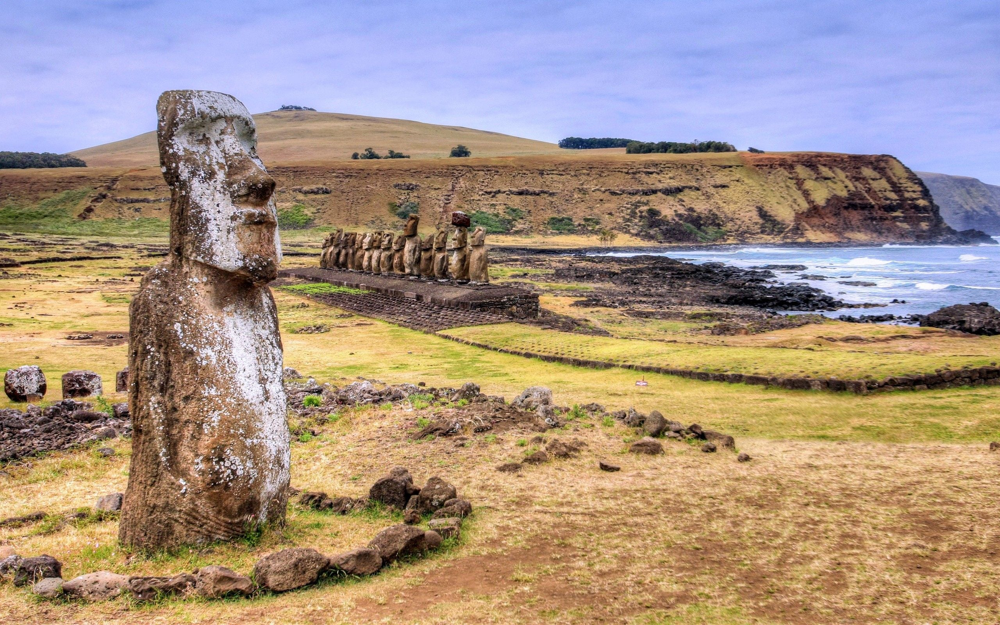
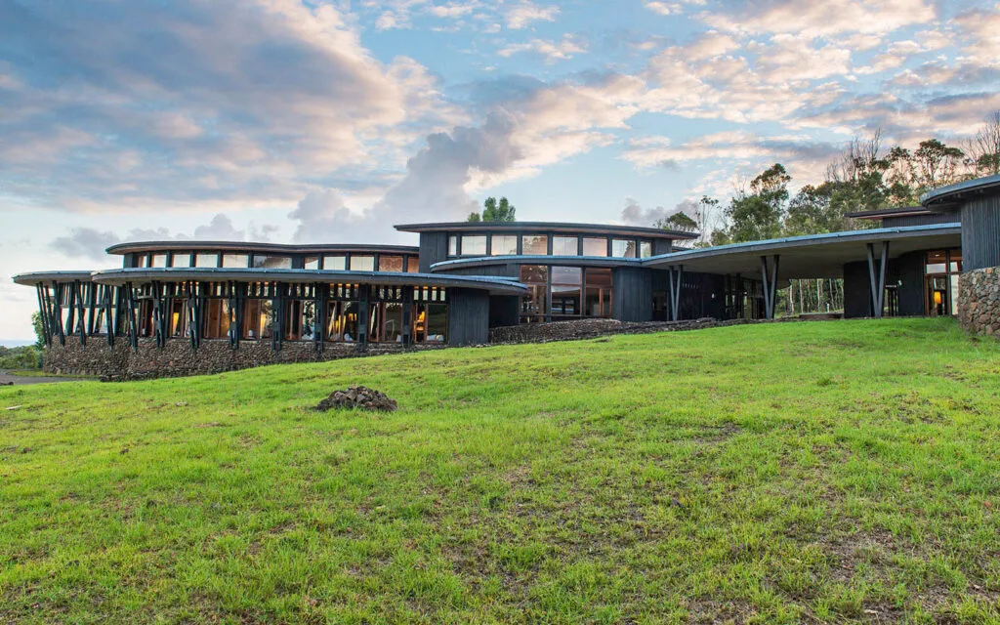

✨ Présentation générale
Découvrez le Chili continental et l’île de Pâques lors de ce voyage exceptionnel de 10 nuits. Entre paysages volcaniques, sites archéologiques sacrés et immersion dans les traditions polynésiennes, ce séjour combine aventure, culture et luxe.
🏨 Hébergements d’exception

🇨🇱 Lodges Chili Continental – 6 nuits
- Chambres avec vue sur les volcans et glaciers
- Piscine et espaces détente
- Petits-déjeuners et dîners inclus
- Service personnalisé et confort haut de gamme

🌴 Hôtel Rapa Nui – 4 nuits
- Chambres au style polynésien avec vue océan
- Proximité des sites archéologiques et Moaï
- Expériences culturelles et repas traditionnels
- Ambiance intimiste et service de qualité
🌋 Activités & Découvertes

💸 Tarif
4 250€ / personne
Vols non inclus – excursions et activités incluses Demander un devis personnalisé